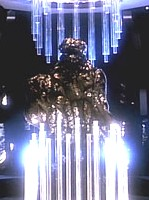

Sheliak |
|
||||
|  |
Forma di vita di classe R-3. È un popolo altamente xenofobo che evita, quando è possibile, il
contatto con la Federazione, probabilmente perché considera gli
umani una forma di vita inferiore. Nel 2255
viene stipulato il Trattato
di Armens tra gli Sheliak e la Federazione. Gli Sheliak si riferisco a
se stessi chiamandosi «L'Associazione» ed hanno un corpo governativo chiamato
«La Corporazione».